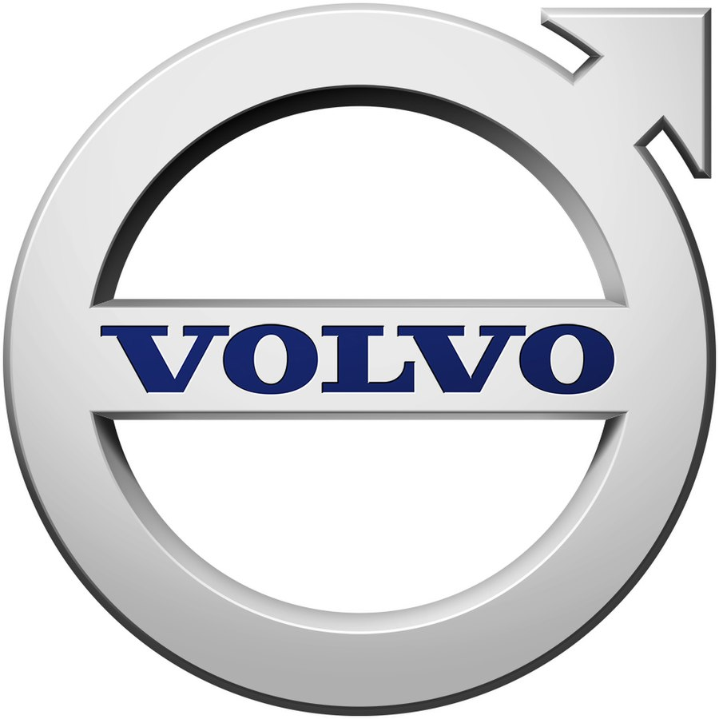
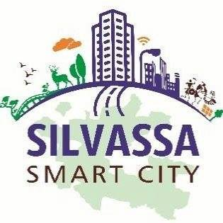

Projects and Organisations
Here is a glimpse of organisations that I have been a part of.
City Bus and BRT Service Level Benchmarking
Surat Sitilink and Centre of Excellence in Urban Transport, CEPT University

Research Studies in Inter-city Transport
Volvo Buses India Pvt. Ltd.

Electric Bus Operations and Management
Silvassa Smart City Limited

Urban Road Improvement Plan - Himachal Pradesh
Client: L&T Infrastructure Engineering Limited and HP Public Works Department - HPRIDC
Year: 2021-22
Diesel to Electric Transition Planning and Deployment
Microgrid Labs USA and Microgrid Labs India